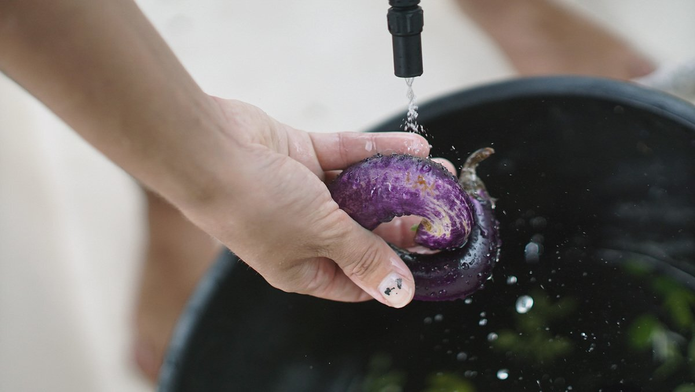

washing produce
After buying fresh produce at the market, I wash everything with baking soda. If there's a lot of dirt, I scrub them with a brush. The mechanical rubbing action and rinsing is very good at removing contaminants. Then finally, I rinse them off with fresh running water and let them dry in the sun. They need to be completely dry, otherwise they may rot faster (moisture accelerates rot).
Washing your produce in baking soda prevents foodborne illness and substantially reduces your exposure to pesticides, it is more effective than using a vinegar solution (because it needs to be used full-strength, and that can get expensive). This washing technique is the same for fresh greens and fruits, although for berries, it is best to wash them right before you plan to eat them.